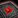
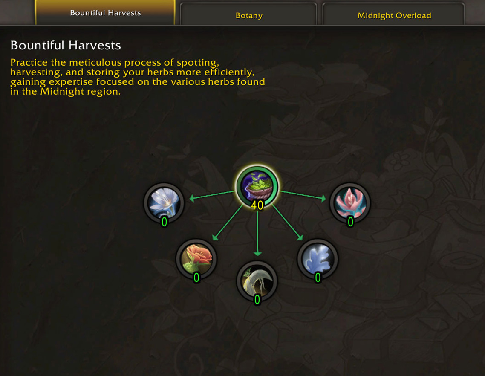
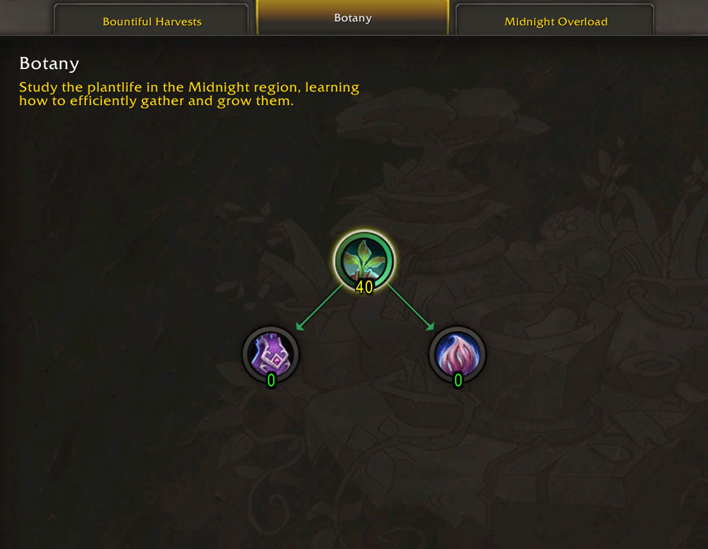
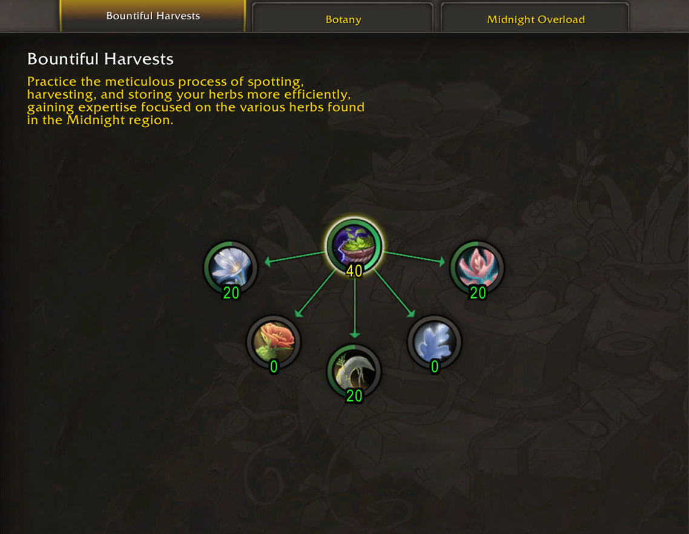
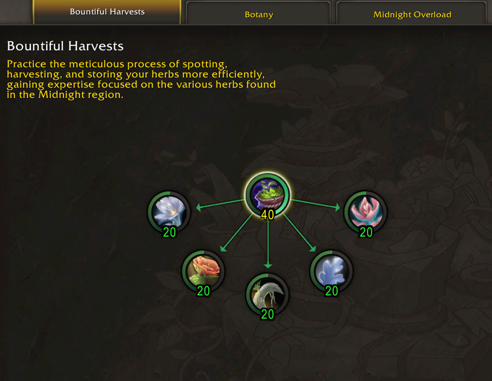

This guide covers the best Herbalism specialization builds for Midnight, how to spend your Knowledge Points phase by phase, and where to find all weekly and one-time KP sources including treasure locations with maps.
This guide covers the best Herbalism specialization builds for Midnight, how to spend your Knowledge Points phase by phase, and where to find all weekly and one-time KP sources including treasure locations with maps.
Leveling, Buffs & Farming
This guide only focuses on knowledge points and specializations. I highly recommend reading my other guide that covers consumables, leveling routes, farming tips, and more:
Leveling, Buffs & Farming Guide
Herbalism Knowledge Points
You can collect around 91 Knowledge Points in week one from these sources:
| Source | KP | Details |
|---|---|---|
| First Gather Discoveries | 34 | 1 KP each time you gather a new node type for the first time. There are 34 total: 5 base herbs, 5 lush herbs, 20 elemental herbs (4 variants per herb), and 4 overloads. |
| Renown Book | 10 |  Traditions of the Haranir: Herbalism sold by Naynar. (Renown 5 Hara'ti) |
| Abundance Book | 10 | Echo of Abundance: Herbalism from the Abundance event. |
| 8 Herbalism Treasures | 24 | 3 KP each, scattered across all zones. (See maps below the table) |
| Treatise | 1 | |
| Weekly Trainer Quest | 3 | Weekly quest from the profession trainer. Rewards |
| Weekly Gathering Drops | 9 | Knowledge items that randomly drop while gathering. You'll loot 5x Thalassian Phoenix Plume (1 KP each), then a Thalassian Phoenix Tail (4 KP) as the final drop for the week. |
| Darkmoon Faire | 3 | Monthly, not weekly. A quick profession quest for +3 Knowledge Points and +2 Profession Skill when the Faire is in town. The Faire starts on the Sunday before the first Monday of each month. |
Weekly Sources (~13 KP/week)
After the first week, your recurring weekly sources are:
- Trainer Quest: 3 KP per week
- Gathering Drops: 9 KP per week (keep gathering and they'll drop naturally)
- Inscription Treatise: 1 KP per week (submit a public crafting order since they're BoP, or craft on an Inscription alt)
- Darkmoon Faire: 3 KP per month (not weekly, but grab it when the Faire is up)
Unlike crafting professions, Herbalism does not get weekly chest drops. Your main weekly source is just gathering herbs and the trainer quest.
Knowledge Catchup
If you fall behind on Knowledge, Thalassian Phoenix Ember (1 KP) can drop while gathering as a catchup item. This works the same as in The War Within, where you get extra drops if you're behind on Knowledge compared to the current maximum. These don't have a weekly cap. You'll get them until you're fully caught up.
Herbalism Treasure Locations
There are 8 Herbalism treasures scattered across Silvermoon City, Eversong Woods, Harandar, and Voidstorm. Each treasure gives 3 Knowledge Points for a total of 24 KP.
| Treasure | Zone | Map |
|---|---|---|
| Simple Leaf Pruners | Silvermoon City | |
| A Spade | Eversong Woods | |
| Peculiar Lotus | Voidstorm | |
| Planting Shovel | Harandar | |
| Bloomed Bud | Harandar | |
| Lightbloom Root | Harandar | |
| Harvester's Sickle | Harandar | |
| Sweeping Harvester's Scythe |
TomTom Waypoints & Treasure Check Macro
TomTom Waypoints
/ttpaste in-game/way #2393 49.0, 75.9 Simple Leaf Pruners (Herbalism) /way #2395 64.2, 30.5 A Spade (Herbalism) /way #2405 34.7, 57.0 Peculiar Lotus (Herbalism) /way #2413 51.1, 55.7 Planting Shovel (Herbalism) /way #2413 38.3, 66.9 Bloomed Bud (Herbalism) /way #2413 36.6, 25.1 Lightbloom Root (Herbalism) /way #2413 76.1, 51.1 Harvester's Sickle (Herbalism)
Treasure Check Macro
true = collectedSpecialization Builds
Here's what I recommend for spending your points step by step. Before we get into the spec tree though, a quick note on Druids since it affects your build path.
Get a Druid Alt
If you don't have a Druid, you should consider leveling a Druid alt just for gathering. Druids can gather herbs while mounted by default, and their instant flight form makes Mining super fast too. With double gathering on a Druid, you'll collect way more herbs and ores.
Once you level your main through the campaign, you can just start a Druid alt and level with Mining and Herbalism, since you get XP for gathering herbs and ores.
For race, Tauren is the best pick for Herbalism. They get +5 Herbalism skill and 25% faster herb gathering (Deftness), which stacks with your gear. If you're doing double gathering with Mining, Highmountain Tauren is also a solid choice since they get +5 Mining skill and 25% faster mining instead.
Phase 1: Building the Base (0-40 points)
There is nothing better than putting 40 points into Bountiful Harvests. It increases your minimum and maximum possible herb yield by 1 and also gives extra skill for all herbs, so you get more Gold Quality herbs.

If you don't have a Druid, it's best to unlock mounted gathering first. Put 40 points into Botany, then put 40 points into Bountiful Harvests.
Don't feel like you're wasting these points. You will need 80 points instead of 40, but you'll get a lot of passive benefits too, like some Deftness and a lot of Finesse.

Phase 2: More Skill and Finesse (40-100 points)
Since the expansion is not out yet, it's hard to tell which path will be best going forward. But I think going for skill on the herb that sells for the most will probably be best again, just like in TWW. The big difference now is that every herb can be found in every zone, so you can't really specialize in just three herb types and only stick to those zones.
What you want to do is grab the 20-point bonus for each herb you want to specialize in. This trait gives your Finesse a chance to yield even more bonus herbs from that node type.
I tested this on beta by only getting this trait for Azeroot, and based on my napkin math I got roughly 15-20% more Azeroot per gather compared to herbs I didn't have the trait for (my avg went from 3.8 to around 4.6, but my sample size wasn't too big). Since it scales with your Finesse, it's probably even better with more Finesse.
In the example below, I'll show what it looks like if you put 60 points into those. This is just an example. Put those points into the most expensive herbs when the expansion is out and you have a better idea of the market. (I'll also update the guide once we have more price data.)

Phase 3: More Herbs (100-140 points)
Slowly fill in the rest of the points as you get them. Get the 20 point bonus for each herb.
Note: If one herb is like 3 times more expensive than the others, it might be worth it to put all your points into that one instead, to get even more Gold Quality.

Phase 4: Finishing the build
At this point you've got all the important ones. From here you can fill in the rest of the points wherever you want.
If Gold Quality herbs are selling for a lot, max out the most expensive ones first. If there isn't that much of a difference between Silver and Gold, I'd fill out the root node in Botany to get more Finesse. The rest of the points don't make a huge difference, so just put them wherever you want at this point. Read my notes in the Overloading section below if you're not sure what to pick. In Botany, both sub-specs are pretty bad. Here's my priority:
- Herbs in Bountiful Harvest for skill
- Botany Root for Finesse
- 1x Overloading Sub-spec where you farm the most
- Cultivation in Botany
- Mulching in Botany (this only gives finesse for Lush herbs)
- Rest of the overloading specs.
Overloading & Nocturnal Lotus
There are some potential alternatives here, so here are my thoughts on those.
Nocturnal Lotus build
When you max out a specific herb in Bountiful Harvests (40 points), you get an increased Nocturnal Lotus drop rate from that herb. If those end up being really expensive, you could put points there instead. But raids and M+ won't be out in the first week and lotus will have very low demand while half the playerbase is on double gathering druids, so I just don't see it being worth it at the start. Getting more from each herb is better, but keep an eye on the market and adjust your build if needed.
If one herb ends up being way more expensive than the others, it might be worth it since you also get a passive skill increase for that herb. More skill means more Gold quality herbs and more profit overall, but it depends on the market and how much more expensive it actually is.
Overloading
If motes end up being crazy expensive, this spec could be worth rushing early. You get extra motes from Overloading, and if those are selling for a lot, the value adds up fast. But it's risky to go all-in without knowing mote prices first. I'd wait until the market stabilizes before committing points here.
I tested each overloading sub-tree maxed out. Here are the results.
CD reduction
You get two charges at 40 points in the root node. Having two charges is actually nice because you're basically always reducing the cooldown while gathering. Without two charges, you'd run into situations where your Overload is ready but there's no infused herb around, so you're just gathering normal herbs without reducing anything. With two charges, you can keep one banked and still reduce the cooldown with the other one.
| Spec Investment | CD Reduction | Applies To |
|---|---|---|
| Base (no points) | 30 min | All herbs |
| Maxed Root Only | 33 min 36 sec | All herbs |
| Maxed Sub-spec Only | 39 min | Only that infused herb type |
| Both Maxed | 42 min 36 sec | Only that infused herb type |
Sub-spec Bonuses
Out of these, Lightfused and Voidbound give the biggest buffs since they double your motes. Primal is decent with 2 extra ticks (40% more), while Wild doesn't seem to increase motes at all, though you might get slightly more on average.
You need 5 points to unlock your first sub-spec and another 40 to fully max out.
| Type | Unlocking (5 points) | +40 Points into the Sub-spec |
|---|---|---|
| Lightfused | Simply unlocking this doubles the light motes you can catch on normal gather. Going from 2x 1-2 motes to 4x 1-2. | Overloading Spawns even more light motes, but it buffs the spawn count so much that it's impossible to catch all of them. They still deal damage, so you'd actually die trying to grab them all. |
| Wild | Fewer herb creatures spawn (4 → 2), but they drop more motes each (1-2 → 2-4). The numbers are still basically the same. You can get 4-8 motes depending on RNG. | Overloading Perception buff duration doubles (5 min → 10 min). |
| Primal | The slow is weaker on you, so basically worthless talent. | Ticks 2 more times, so it drains 70% HP total and you get 1-2 motes for each of the 7 ticks. |
| Voidbound | Your overload ability become a different spell after using the portal and you can portal back with it. It's just not worth using in its current form. | Twice as many void chunks: 8x (1-2 each). The spawns are sometimes so bad and they disappear so fast that I often couldn't grab all of them. |